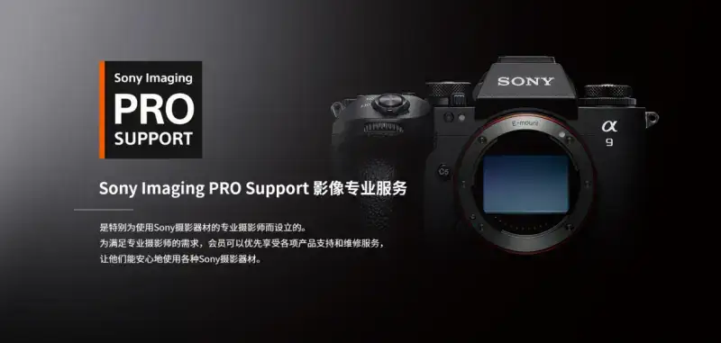
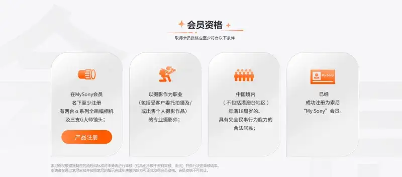
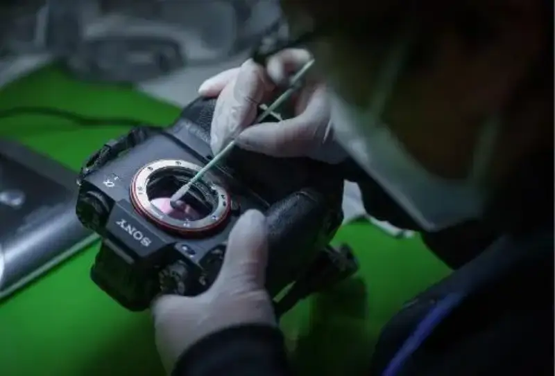
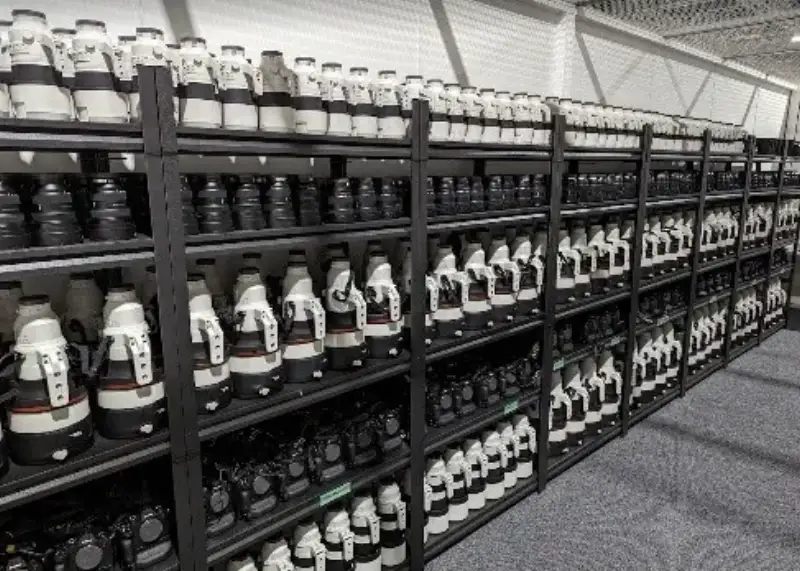
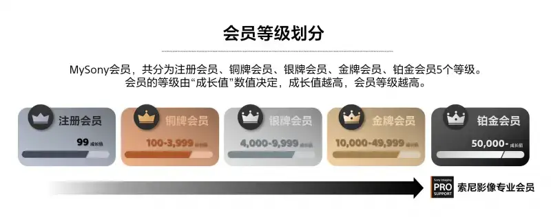
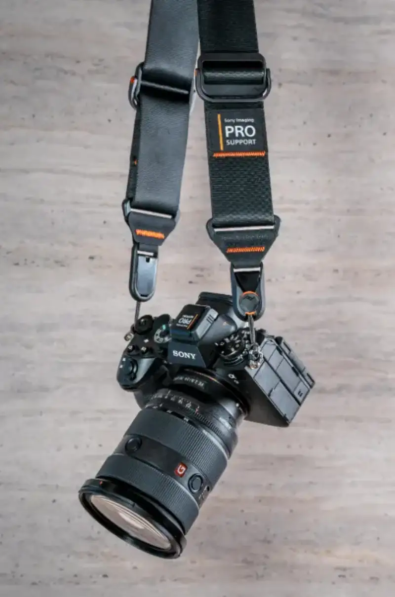

[Shanghai, December 20, 2024] Sony China announced an upgrade to the Sony Imaging PRO Support (called PRO Support) program. The goal is to give professional photographers warmer, more complete professional support. The program is built to meet the needs of professional photographers. It includes a professional member welcome kit, free camera cleaning, a 50 percent discount on repair labor, a dedicated service hotline, member discounts on gear purchases, and new-product experience events.

Sony Imaging Professional Service
Member eligibility
To become a PRO Support member, a photographer must register as a Sony "My Sony" member. The member must also have at least two alpha-series full-frame cameras and three Sony G Master lenses registered under their name. In addition, the applicant must be a professional photographer whose job is photography. They must be a legal resident of mainland China (excluding Hong Kong, Macao, and Taiwan) and at least 18 years old. Sony reviews each applicant and decides the result. After passing the review and paying the annual fee, the photographer becomes an official member.

PRO Support membership
Member benefits and service scope
PRO Support members get a set of member-only benefits. These include a professional member welcome kit, free camera cleaning, a 50 percent discount on repair labor (the discount does not cover parts), a dedicated service hotline, member discounts on gear, and new-product experience events.
PRO Support member services
Right now, Sony repair centers across the country offer camera cleaning. For professional service quality, the care and repair of members' cameras and lenses, image-quality tuning, gear reliability testing, and environmental tests (high heat, low heat, underwater, and more) are all done by the factory with professional equipment. The expert engineers at Sony's Wuxi factory follow Sony's global imaging professional service process. This keeps members' cameras and lenses up to professional shooting standards after care, so photographers can shoot with more peace of mind.

Sony's factory provides professional service
At global and domestic events, Sony also offers PRO Support members free gear loans, cleaning, fast repair, and answers to usage questions. This makes sure professional photographers can shoot with peace of mind while they work.

The Sony Imaging Professional Service team
Platinum MySony member privileges
When you register as a PRO Support member, you also get the top Platinum tier of the My Sony Club. MySony is the official Sony membership center. It has five tiers: registered member, bronze, silver, gold, and platinum. Members get different benefits at each tier.

My Sony Club membership tiers
As a Sony PRO Support professional member, you directly reach the MySony Platinum tier. You get member benefits such as product order discounts, free delivery, invites to new-product launches and product experience events, and after-sales discounts.
Annual membership fee
The first-year PRO Support membership fee is 399 RMB, and it includes an exclusive first-year member kit. After that, each renewal is 99 RMB per year, and it covers all services except the welcome kit.

The PRO Support exclusive first-year member gift
The exclusive first-year gift includes a PeakDesign SlideV2 Professional custom multi-function strap, a custom Sony splash-proof hot-shoe cover, PRO Support stickers, and an exclusive badge.
*Renewals do not include the member kit
The PRO Support annual membership fee
How to apply
Photographers who want to join the PRO Support program can apply at the official Sony site, www.sony.com.cn/pro_support. Sony looks forward to working with more professional photographers to push imaging creation forward.